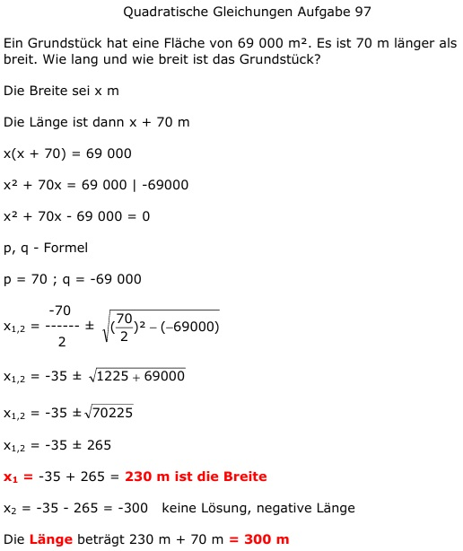

Quadratische Gleichungen Aufgabe 97 Ein Grundstück hat eine Fläche von 69 000 m². Es ist 70 m länger als breit. Wie lang und wie breit ist das Grundstück? Die Breite sei x m Die Länge ist dann x + 70 m x(x + 70) = 69 000 x² + 70x = 69 000 | -69000 x² + 70x - 69 000 = 0 p, q - Formel p = 70 ; q = -69 000  x1,2 = -35 ± x1,2 = -35 ± x1,2 = -35 ± 265 x1 = -35 + 265 = 230 m ist die Breite. x2 = -35 - 265 = - 300 keine Lösung, negative Länge. Die Länge beträgt 230 m + 70 m = 300 m